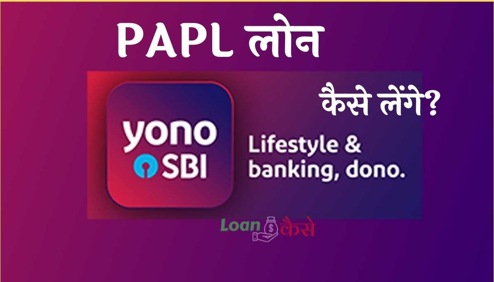

हेलो फ्रेंड्स आज मैं आपको बताऊंगा कि SBI Yono PAPL Loan Kya hai? यह लोन कैसे लिया जाता है स्टेट बैंक ऑफ इंडिया (SBI) के PAPL लोन के बारे में कंपलीट इनफॉरमेशन आज के इस पोस्ट में हम आपको देने वाले हैं ,साथ-साथ आपको एक DEMO भी देकर बताएंगे, जिससे आपको स्टेट बैंक ऑफ इंडिया के पीएपीएल लोन लेने का Process आसानी से समझ में आ सके ,तो दोस्तों अगर आपका खाता स्टेट बैंक ऑफ इंडिया में है और अगर आप स्टेट बैंक ऑफ इंडिया का YONO एप्लीकेशन यूज करते है साथ ही अगर आपको लोन की आवश्यकता है.तो इस पोस्ट को लास्ट तक पढ़िए इसमें हम आपको SBI Yono PAPL Loan Kya hai इसके बारे में कंप्लीट इंफॉर्मेशन आज देने वाले हैं तो चलिए शुरू करते हैं।
{kind=link}

SBI Yono PAPL Loan kya hai in hindi?
दोस्तों PAPL का पूरा नाम है( Per Approved Personal Loan) है,यह एक प्रकार का पर्सनल लोन ही होता है दोस्तों स्टेट बैंक ऑफ इंडिया का जो अपना सरवर है जिसमें स्टेट बैंक ऑफ इंडिया अपने सभी कस्टमर का डाटा स्टोर करके रखती है। डाटा कहने का मतलब कि अपने कस्टमर का सिविल स्कोर उनका सैलरी स्टेटमेंट कस्टमर का टर्नओवर यह सब चीजें रिकॉर्ड करके स्टेट बैंक ऑफ इंडिया अपने सरवर में रखती है,और बैंक इन सभी डेटा का यूज कस्टमर के लायबिलिटी को चेक करने के लिए करती है यू कहे तो कस्टमर के फाइनेंशियल बैकग्राउंड चेक करने के लिए करती है.
ऐसे में जिन कस्टमर का फाइनेंसियल बैकग्राउंड अच्छा होता है उन कस्टमर को उनके स्टेट बैंक ऑफ इंडिया के यूनो एप्लीकेशन में नोटिफिकेशन भेज कर या रजिस्टर्ड मोबाइल नंबर पर एसएमएस के जरिए बैंक SBI Yono PAPL Loan का ऑफर प्रोवाइड करती है।
SBI Yono PAPL Loan कौन ले सकता है?
जैसा कि मैंने अभी बताया कि पीएपीएल लोन कुछ चुनिंदा कस्टमर को ही उनके फाइनेंशियल बैकग्राउंड के आधार पर बिना किसी गारंटी के पर्सनल लोन प्रोवाइड करती है यानी कि बैंक अपनी मर्जी से कुछ चुनिंदा कस्टमर को पीएपीएल लोन ऑफर करती है और जिन कस्टमर को यह अवसर मिलता है वही SBI Yono PAPL Loan ले सकते हैं।
State Bank of India Yono PAPL Loan किस काम( Purpose) के लिए मिलेगा ?
दोस्तों अगर आप SBI Yono PAPL Loan जुआ खेलने या गैंबलिंग के लिए लेना चाह रहे हैं तो आपको यह लोन नहीं मिलेगा, क्योंकि यह एक पर्सनल लोन है इसीलिए इस लोन का जो भी पैसा होगा वह आप अपने पर्सनल काम के लिए जैसे कुछ खरीदारी करनी हो या किसी को पैसे देने हो या घर में शादी हो इस तरह के काम के लिए आप SBI Yono PAPL Loan ले सकते हैं।
State Bank of India Yono PAPL Loan ऑफर पीरियड क्या है?
जैसा कि आपको मैंने ऊपर बताया की एसबीआई योनो पीएपीएल लोन कुछ कस्टमर को स्टेट बैंक ऑफ इंडिया ऑफर करती है यानी कि यह लोन एक ऑफर की तरह होता है तो इसका एक टाइम पीरियड तो होगा ही,जिस टाइम पीरियड में आप अगर लोन लेना चाहे तो ले सकते हैं, अगर ऑफर पीरियड समाप्त हो जाता है तो आपको लोन नहीं मिल पाएगा तो आपको ध्यान देना है कि आपका लोन ऑफर पीरियड कब से कब तक है उसी पीरियड में आप लोन के लिए अप्लाई करेंगे तो SBI Yono PAPL Loan ले पाएंगे ।
State Bank of India Yono PAPL Loan कितना मिलेगा?
दोस्तों यह लोन डिपेंड करता है कि आपको कितने लोन अमाउंट का ऑफर किया गया है आपके अकाउंट में जितने अमाउंट का ऑफर होगा उतना लोन ही आप ले पाएंगे सामान्य तौर पर आपके एवरेज इनकम का 3 गुना आजकल एसबीआई अपने ग्राहकों को SBI Yono PAPL Loan ऑफर कर रही है। तो आप यह मान कर चल सकते हैं कि आप जितना कमाते हैं उसका 3 गुना आप लोन ले पाएंगे।
SBI (State Bank of India) Yono PAPL Loan Eligibility criteria क्या है?
- इस लोन की एलिजिबिलिटी यह की स्टेट बैंक ऑफ इंडिया का ग्राहक होना चाहिए।
- आपकी जो सैलरी है वह एवरेज ₹25000 से अधिक होनी चाहिए।
- आपका किसी भी तरह का एनपीए अकाउंट एसबीआई या किसी अन्य बैंक में नहीं होना चाहिए।
- अगर आपका ऑलरेडी कोई लोन चल रहा हो तो वह regular होना चाहिए, कोई भी EMI मिस नहीं होना चाहिए। ऐसा ना हो कि आप पहले चल रहे लोन का किस्त जमा करने में देरी कर रहे हो इससे आपका CIBIL Score खराब होता है और आपको SBI Yono PAPL Loan लेने में दिक्कत हो सकती है।
SBI Yono PAPL Loan Processing fee कितना लगता है?
प्रोसेसिंग भी इसमें बहुत ही कम लगता है
- ₹10,0000/- तक SBI Yono PAPL Loan लेने पर लगभग ₹500 प्लस जीएसटी देने होते हैं।
- वही एक लाख से ऊपर के लोन लेने पर प्रोसेसिंग फी 1000 रुपए प्लस जीएसटी देने होते हैं।
SBI Yono PAPL Loan लेने के लिए CIBIL स्कोर कितना होना चाहिए?
दोस्तों एसबीआई योनो पीएपीएल लोन अगर आप लेना चाहते हैं तो आपका cibil स्कोर 650 से ज्यादा होना चाहिए तभी आपको SBI Yono PAPL Loan मिल पाएगा। 650 से नीचे अगर आपका सिविल एसकोर है तो बैंक आपको यह लोन प्रोवाइड नहीं करेगा।
रेट ऑफ इंटरेस्ट(ब्याज दर) और Tenure कितना होगा?
एसबीआई पीएपीएल लोन लगभग 10 परसेंट मैं मिल जाता है और यह 3 महीने से लेकर 3 साल यानी 18 महीने तक का TENURE लोन को वापस करने के लिए देता है ।
How to apply SBI Yono PAPL Loan (अप्लाई कैसे करें)?
आपको स्टेट बैंक ऑफ इंडिया का यूनो एप्लीकेशन अपने फोन में इंस्टॉल करना है और उसमें स्टेट बैंक ऑफ इंडिया के इंटरनेट बैंकिंग से लॉगिन करके रखना है जब आप के खाते में बैंक पीएपीएल लोन ऑफर करेगी तो आपको यहां पर है नोटिफिकेशन मिलेगा।
SBI Yono PAPL Loan योनो ऐप की मदद से नीचे दिए गए स्टेप को फॉलो करके आप आसानी से ले सकते हैं तो आइए जानते हैं कि वह स्टेप कौन-कौन से हैं?
- सबसे पहले आपको युवाओं एप्लीकेशन ओपन कर लेना है और उसमें अपना पासवर्ड डालकर लॉगइन कर लेना है।
- जैसे ही आप अपने यू नो एप्लीकेशन में लॉगिन करेंगे आपको फर्स्ट स्क्रीन पर ही नीचे दिखेगा Congratulation you are eligible for instant pre-approved personal loan of 425000 Rupee. no branch visit no document required instant credit.
- इस तरह का ऑफर अगर आपकी एप्लीकेशन में दिखा रहा है तो बधाई हो आप SBI Yono PAPL Loan ले सकते हैं इसके लिए आपको बैंक जाने की भी जरूरत नहीं है ना ही आपको कोई डॉक्यूमेंट किसी को देना है इंस्टेंट 2 मिनट के अंदर आप इस लोन को लेकर अपने खाते में लोन अमाउंट क्रेडिट कर सकते हैं।
- उसके बाद आपको Avail now पर क्लिक कर देना है।
- इसके बाद आपके सामने एक नया विंडो ओपन हो जाएगा यहां पर आपको सबसे पहले लोन अमाउंट दिखेगा जितने का आपको लोन ऑफर हुआ है उसके नीचे आपको लोन अमाउंट सेट करने का ऑप्शन मिलेगा कि आप कितना तक का लोन लेने वाले हैं।
- लोन अमाउंट सेट कर लेने के बाद आपको नीचे tenure सिलेक्ट करने के लिए बोलेगा तो आपको अपने सुविधा के अनुसार tenure सिलेक्ट कर लेना है।
- उसके नीचे आपको रेट ऑफ इंटरेस्ट दिखेगा और नीचे उसके बाद EMI कैलकुलेट होकर दिखेगा।
- अब आपको नेक्स्ट पर क्लिक कर देना है नेक्स्ट पर क्लिक कर देने के बाद आपको किस अकाउंट में पैसे क्रेडिट होंगे वह अकाउंट दिखेगा उसके नीचे EMI स्टार्ट करने का डेट पूछा जाएगा यानी कि आप किस डेट को लोन का किस्त हर महीने चुकाना चाहते हैं वह डेट यहां पर आपको सेलेक्ट कर लेना है।
- उसके बाद आपको फिर नेक्स्ट पर क्लिक कर देना नेक्स्ट क्लिक करने के बाद आपके सामने कुछ TERM एंड कंडीशन आ जाएंगे इसे आप को पढ़कर एक्सेप्ट कर लेना है और फिर नेक्स्ट पर क्लिक कर देना।
- अब आपके सामने 1 रिव्यू विंडो ओपन हो जाएगा इसमें आपका लोन अमाउंट,Tenure, रेट ऑफ इंटरेस्ट,EMI सभी दिखाया जाएगा यह सब चेक कर लेने के बाद अगर आप आगे बढ़ना चाहे तो बढ़ सकते हैं या अब कुछ चेंज करना चाहे तो वह भी कर सकते हैं चलिए हम फिर आगे बढ़ते हैं Next पर आपको क्लिक कर देना।
- इसके बाद आपकी रजिस्टर्ड मोबाइल पर एक ओटीपी आएगा उस ओटीपी को यहां डालकर सबमिट पर क्लिक कर देना है।
- अगर सब कुछ सही रहा तो आपके पास सक्सेसफुल का मैसेज आ जाएगा और उसी समय कुछ भी दे रहे हैं आपके खाते में पैसे जमा हो जाएंगे। याद रखें कि जो लोन अमाउंट होगा उसमें से प्रोसेसिंग भी काट कर आपके खाते में पैसे ट्रांसफर कर लिए जाएंगे यानी कि अगर आपका ₹100000 का लोन अप्रूव है और ₹2000 प्रोसेसिंग थी उस लोन के लिए लग रहे हैं तो आपके खाते में ₹80000 ही क्रेडिट होंगे।
SBI Yono PAPL Loan रीपेमेंट कैसे करेंगे?
दोस्तों इस लोन को रीपेमेंट करने के लिए आपको कुछ नहीं करना है यह लोन आपके सेविंग अकाउंट से लिंक होता है और हर महीने आपके खाते से किस्त की राशि अपने आप कट जाती है।
बस आपको इतना ही ध्यान रखना है कि जिस डेट को आपका लोन का पैसा खाते से कटता है उस डेट को आपके खाते में उतना पैसा होना चाहिए जितना हर महीने काटा जाता है।
अगर 90 दिन तक या उससे ज्यादा आपका लोन का EMI पेमेंट नहीं होता है तो आपका अकाउंट एनपीए अकाउंट घोषित कर दिया जाएगा और भविष्य में आपको किसी भी तरह का लोन लेने में काफी कठिनाई होगी यू कहे तो आपको भविष्य में कोई लोन बैंक की तरफ से नहीं दिया जाएगा।
conclusion (निष्कर्ष):-
तो दोस्तों आज आने जाना की SBI Yono PAPL Loan kya hai ? SBI Yono PAPL Loan के eligiblity criteria क्या है ,SBI Yono PAPL Loan के लिए कैसे apply करते हैं ?अगर आपको थोड़ी सी भी जानकारी मिली हो तो please अपने दोस्तों और रिश्तेदारों के साथ शेयर ज़रूर करें ।